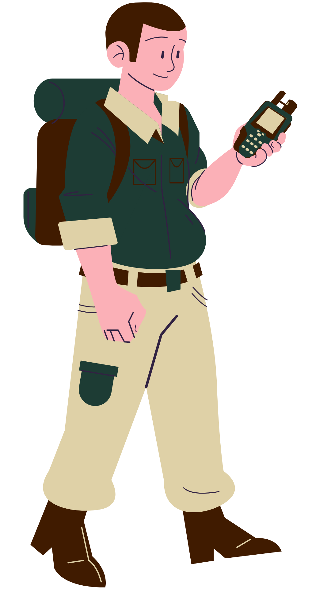
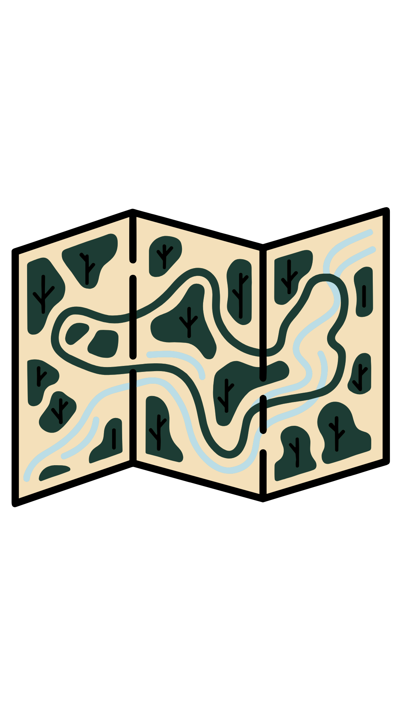
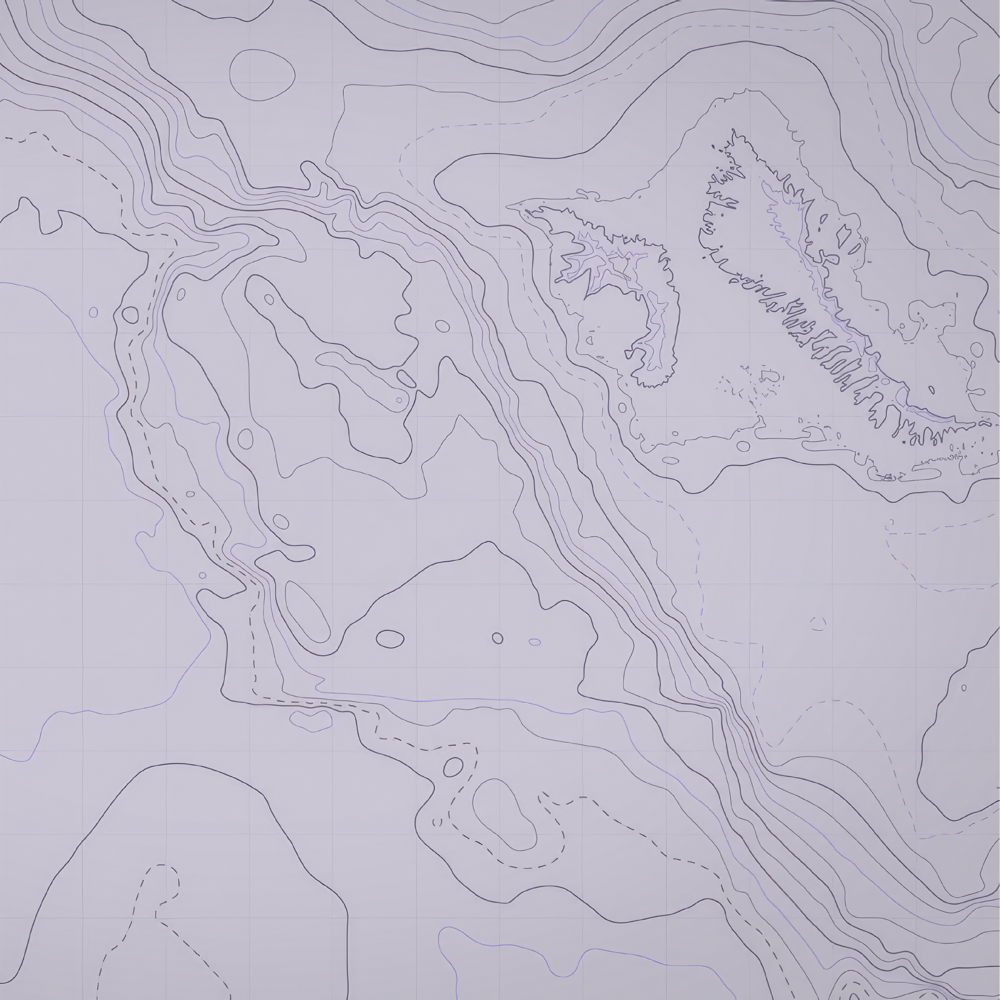
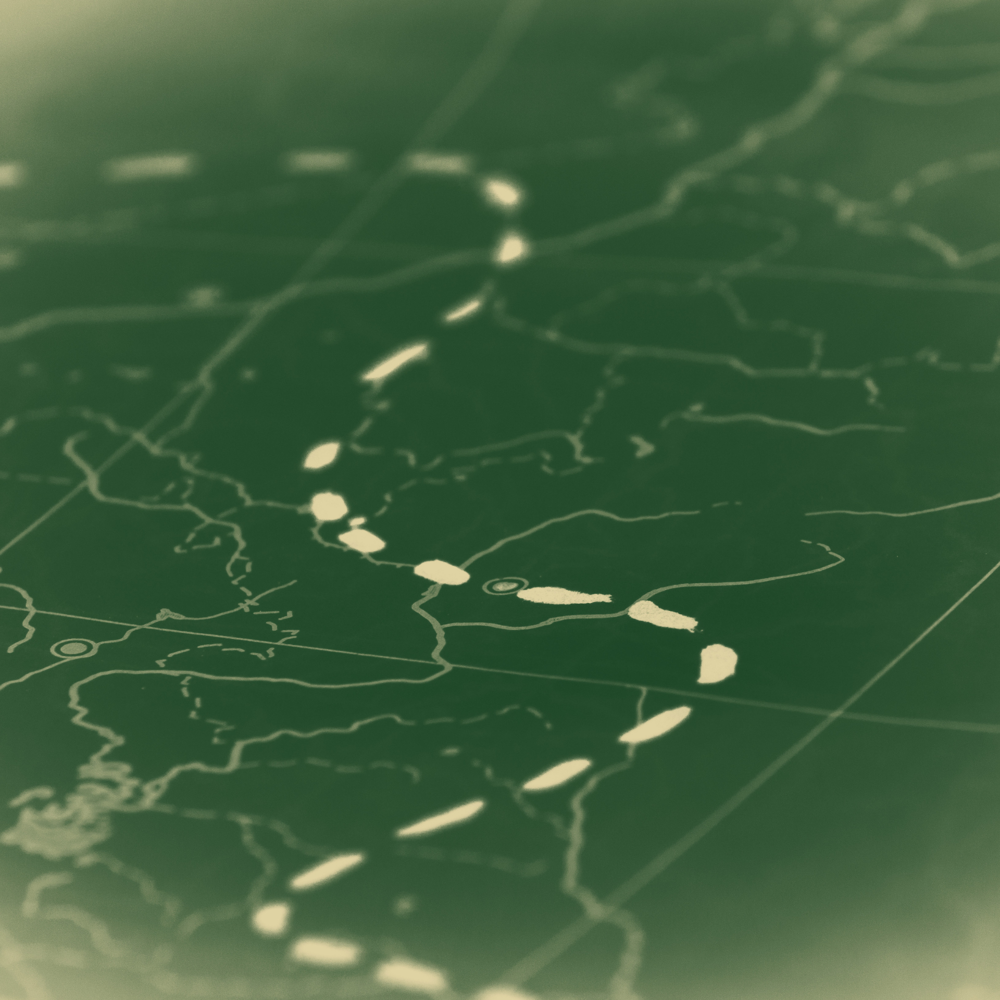
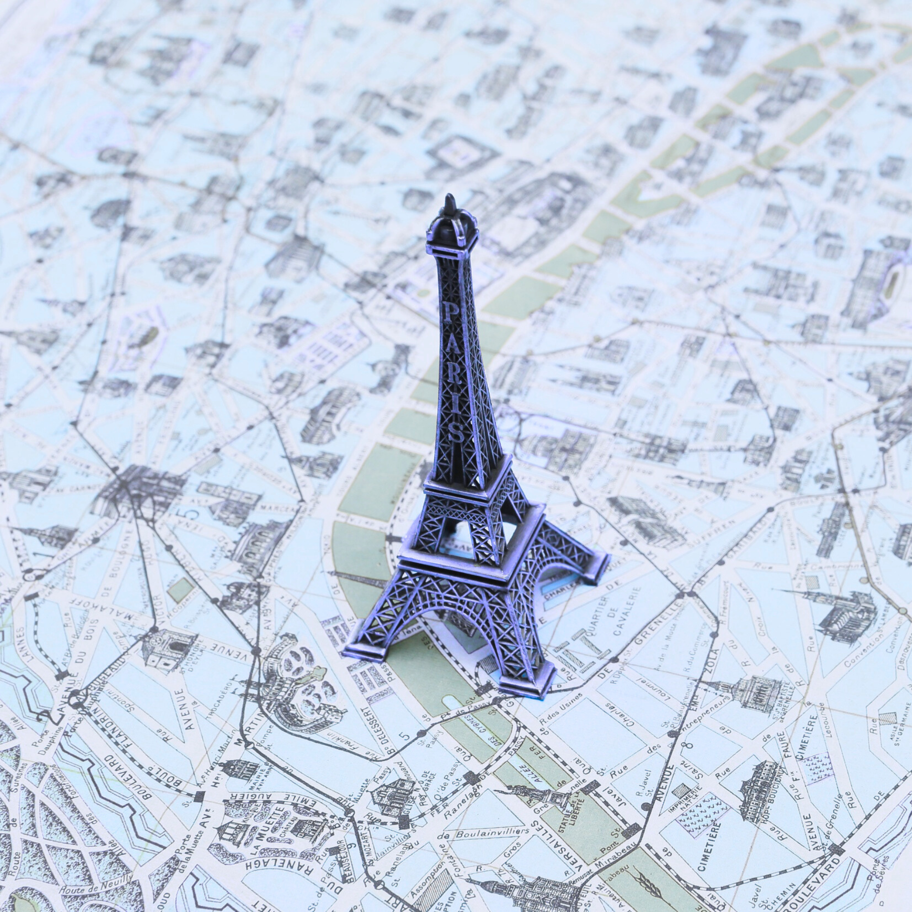
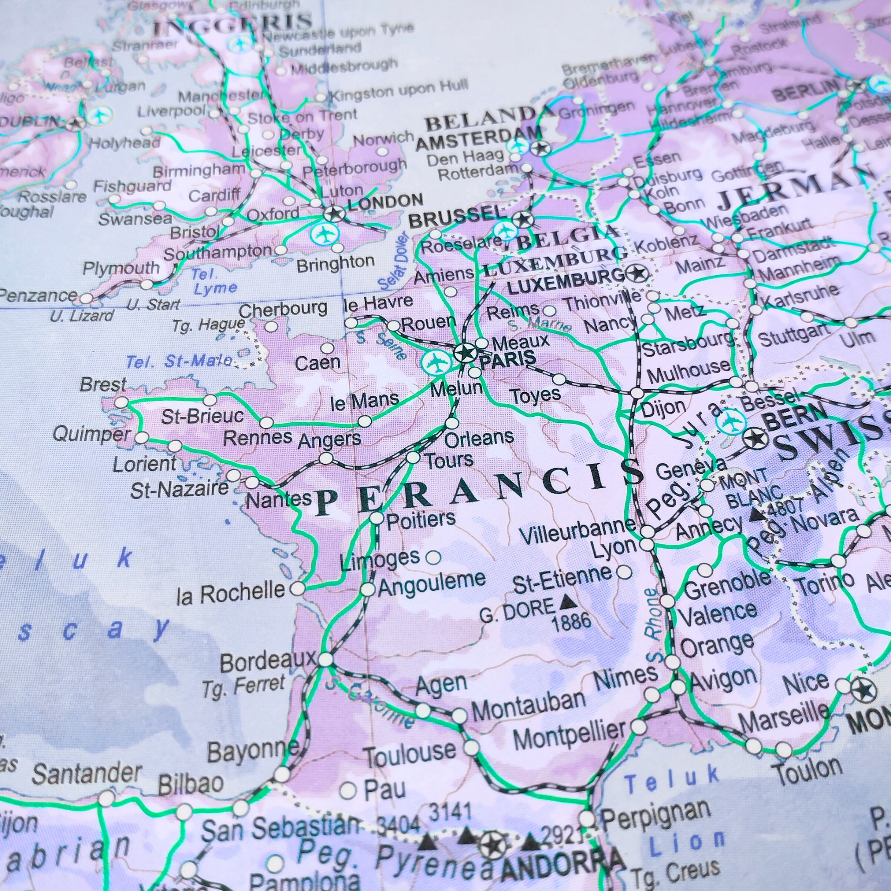
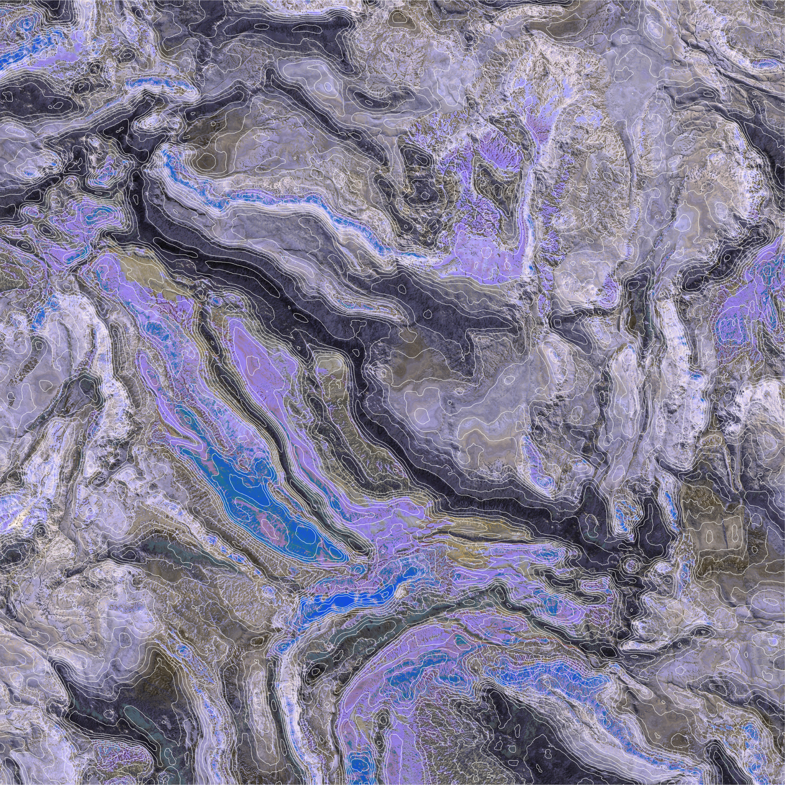

SAR Ship Detection
A geospatial machine learning project that identifies ships in synthetic aperture radar imagery.
View ProjectCartography | Coding | Geographic Information Systems
Passionate about Maps & Data

I am a geography and computer science student interested in the intersection of data, geography, and international development. My work focuses on using cartography and statistical analysis to help people understand patterns and make better spatial decisions.

A geospatial machine learning project that identifies ships in synthetic aperture radar imagery.
View Project
A GIS accessibility analysis focused on travel time, health access, and public health planning.
View Project
A transit mapping project that uses geographic data to find areas with weaker access to public transportation.
View Project




